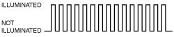
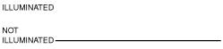
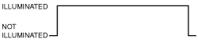

DTC INSPECTION [IMMOBILIZER SYSTEM]
id0902e4028500
Verifying DTCs Using Security Indicator Light
1. Switch the ignition ON (engine off or on).
2. Wait for approx. 1 min until the security indicator light displays a DTC.
|
Security indicator light flash pattern (before displaying DTC) |
DTC |
|---|---|
 |
09, 11, 13, 15, 16
|
 |
21
|
 |
22, 23
|
3. Read DTCs by the number of times the security indicator light flashes as shown in the figure.
Example: DTC 13
am2zzw00009052
|
4. Repair the malfunctioning part according to the applicable DTC troubleshooting based on the DTC which was verified by the number of times the security indicator light flashed. (See DTC TABLE [IMMOBILIZER SYSTEM].)
Detecting DTCs Using M-MDS
1. Connect the M-MDS to the DLC-2.
2. After the vehicle is identified, select the following items from the initialization screen of the M-MDS.
3. Verify the DTC according to the directions on the screen.
4. After completion of repairs, clear all DTCs stored in the start stop unit. (See CLEARING DTC [IMMOBILIZER SYSTEM].)